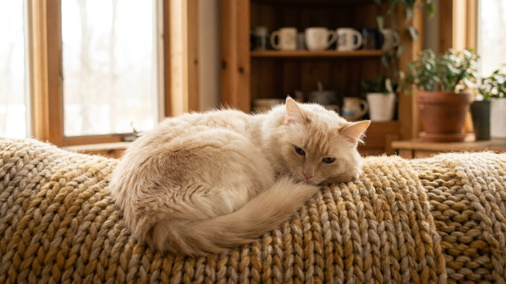

Хозяин уходит — турецкая ангора открывает кран и смотрит на воду. Хозяин возвращается — ангора идёт встречать и рассказывает, как прошёл день. Это не выдумки заводчиков: turkish angora действительно одна из самых активных, «разговорчивых» и самостоятельных пород. Ниже — что стоит знать до того, как взять котёнка домой.
🐾 Питомец ведёт себя странно?
AnimaLife расшифрует поведение кошки и собаки и подскажет, что делать. Попробуйте бесплатно прямо в мессенджере.
Турецкая ангора — одна из древнейших естественных пород. Формировалась без участия селекционеров в суровом климате Анатолии, что дало ей независимый характер и высокий интеллект. Это не «диванная» кошка и не украшение интерьера.
Турецкие ангоры нетипично для кошек любят воду. В природе порода жила рядом с озером Ван (отсюда путаница с «ванскими кошками»): плавала и рыбачила. Домашняя ангора воспроизводит это поведение по-своему.
Для питья лучше поставить питьевой фонтанчик — ангора будет пользоваться им охотнее, чем статичной миской. Это полезно для гидратации и снижает интерес к кранам.
Турецкая ангора без занятости и пространства для движения становится тревожной и деструктивной. Обогащение среды — не опция, а базовая потребность породы.
Несмотря на длинную шелковистую шерсть, уход за ангорой не требует ежедневных расчёсываний. Структура шерсти — без густого подшёрстка, поэтому колтуны образуются редко.
Турецкая ангора подходит людям активным, готовым к диалогу с кошкой — буквально. Если вы хотите питомца, который будет тихо дремать на подоконнике, рассмотрите другую породу. Если вы хотите умного, энергичного и преданного партнёра по жизни — ангора именно такая.
🐾 Здоровье питомца под контролем
AI-ветеринар, дневник здоровья и персональные советы для вашего питомца — установите AnimaLife бесплатно.
🐾 Понравился разбор?
Подпишитесь на канал — каждый день разбираем по одному тревожному симптому у кошек и собак: что в пределах нормы, а когда пора к врачу. Подпишитесь, чтобы не пропустить разбор, который может спасти здоровье вашего питомца.
Материал носит информационный характер и не заменяет очную консультацию ветеринара.